Add subtitles to your video in any font you like
Charlatan listens to your video, writes every word you say, and lets you pick how it looks, from 99 fonts, not the same three everyone else is using. All on your iPhone.
Free to start · No account · Nothing leaves your iPhone
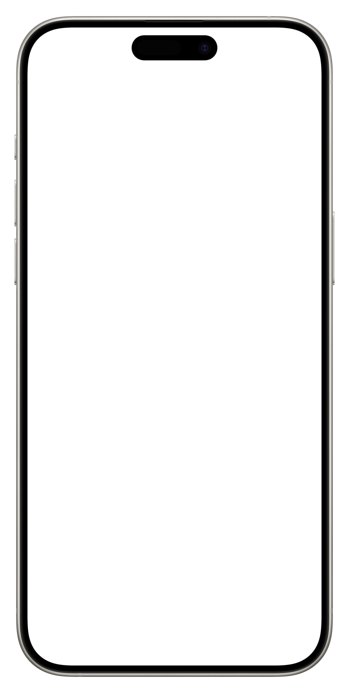
Drag the handle: same clip, with and without Charlatan.
Your next video, subtitled.
Pick a clip, let it write itself, choose the font. The first one takes about two minutes.
Free on the App Store · iPhone · iPad · iOS 18 or later
The looks people ask for, one tap away
Eleven ready-made styles, each shown on your own video before you choose it: font, colours, outline, box, highlight and animation at once. Then tweak anything you like.
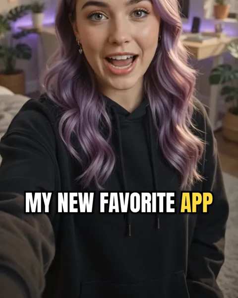
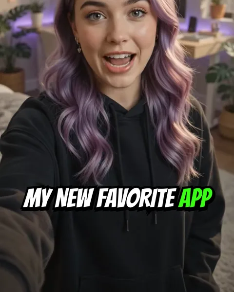
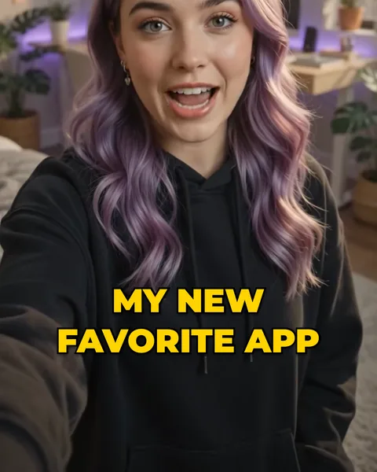
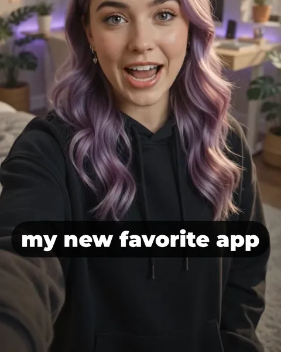
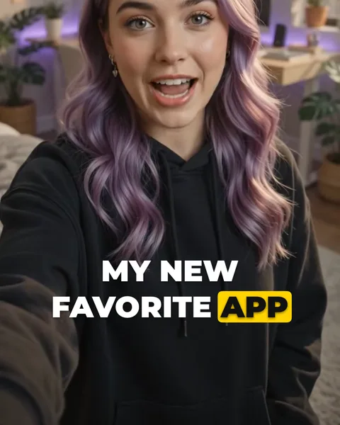
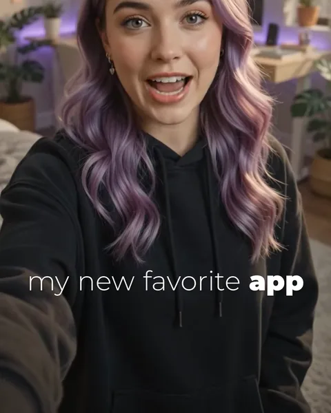
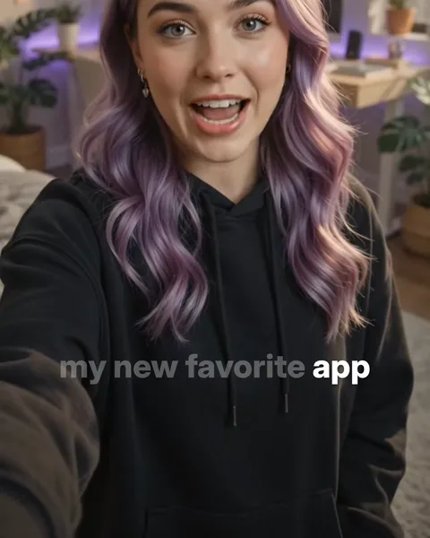
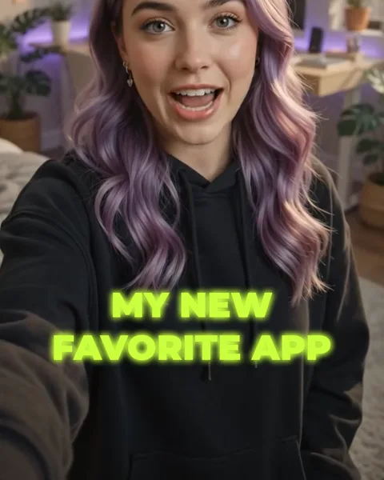
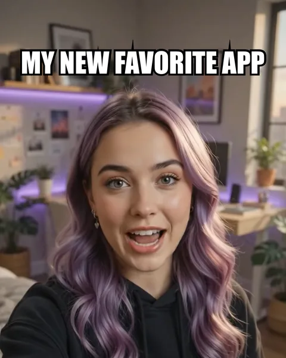
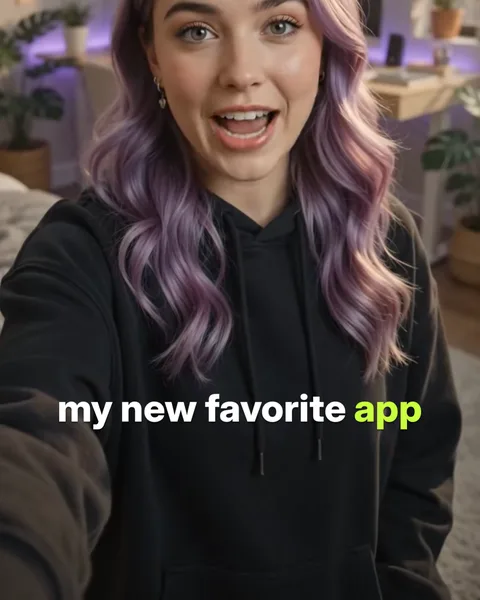
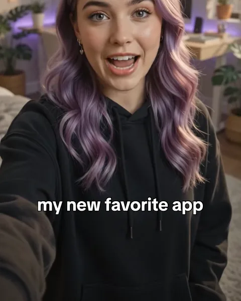
Plus Telop, Variety and Marugo for Japanese, Korean and Chinese. Rendered by the app, exactly as they export.
Every screen between a clip and a post
Most people watch with the sound off. What separates a clip that looks made from one that looks posted is the type on it.
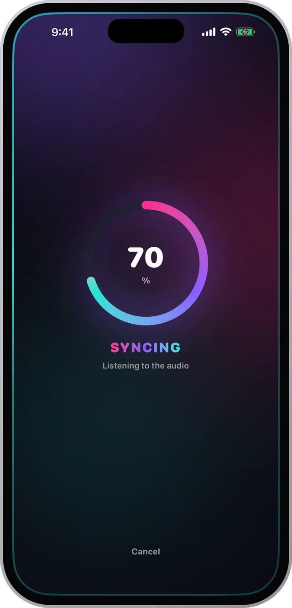
It writes every word you say
Pick a clip or record one in the app. Charlatan transcribes the audio and times each word to the moment you said it, on the iPhone, with nothing uploaded anywhere.
How to add subtitles on iPhone →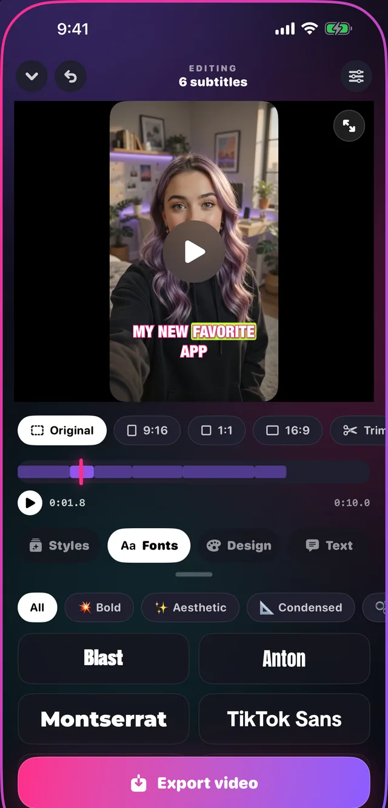
The font is the whole point
Bold, aesthetic, cute, cursive, pixel, gothic: grouped the way people search for them, with Montserrat, TikTok Sans, Anton and Bangers inside. Every caption app gives you a default; Charlatan gives you a catalogue, previewed on your own video before you choose. Japanese, Korean and Chinese get their own heavy fonts.
The best fonts for subtitles →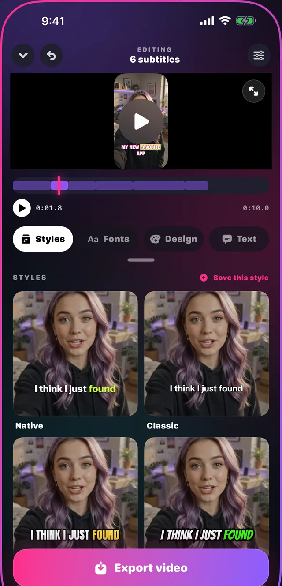
Word by word, right on time
Tap a ready-made style (Hustle, Beast, Karaoke, Pill and more) or build your own. Each word lights up exactly when it is spoken, the keyword of every line gets its own colour, words can pop or rise in, and what has been said can fade. Then drag the caption where you want it.
How karaoke captions work →
Word. Punch. Phrase.
One word at a time for the classic short-form look, bursts of two or three for rhythm, or full sentences that are easier to read. Switch between them and the timing recalculates itself.
The TikTok caption look →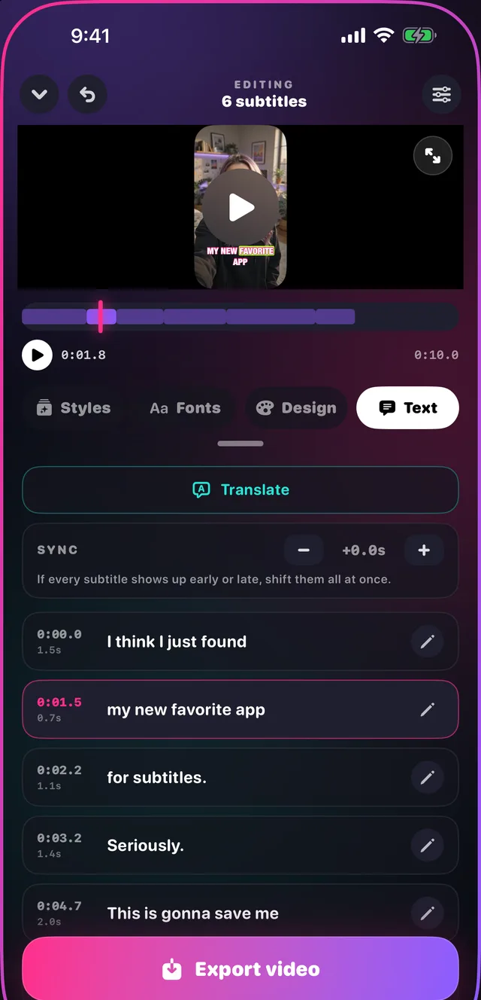
Record in one language, post in another
The same clip can go out with subtitles in twenty languages. The footage cost you once: every extra language after that is a couple of minutes.
How to translate subtitles →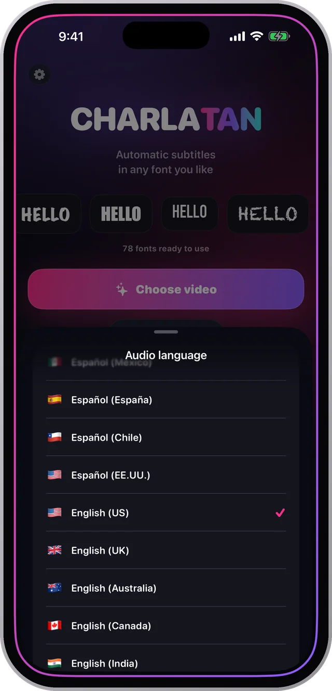
No account. No upload. No internet.
The speech recognition runs on the iPhone itself, so your audio never leaves the phone. There is nothing to sign up for, and it works on a plane.
Subtitles without internet →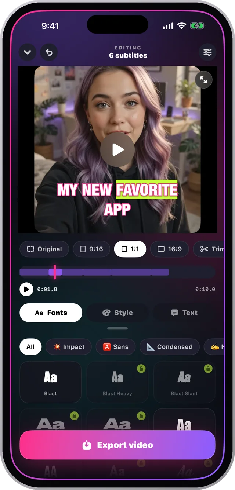
Captions that survive every platform
The captions are rendered into the video frames themselves, no SRT file to attach or lose. Export 9:16, 1:1, 16:9 or the original framing, and it looks identical everywhere you post it.
Burned-in vs SRT, explained →The big screen, side by side
The video on one side, the fonts and styles on the other, and a line you drag to give either one more room. Same app, same purchase.
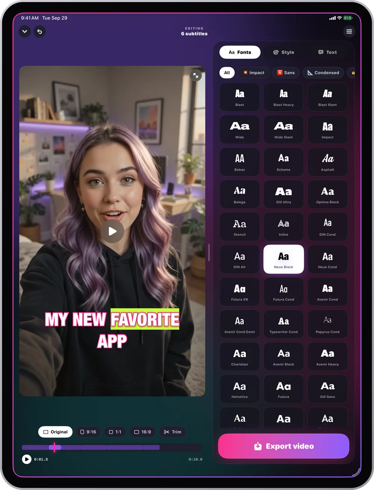
One caption, 99 personalities
The same word changes character with every typeface, which is how your videos start looking like a channel instead of an app.
A rough taste rendered in your browser: the real set is 99 typefaces inside the app.
Four steps. About two minutes.
No computer, no timeline editing, no typing out what you already said.
Pick or record
Take a clip from your library, or shoot one straight into the app.
It transcribes
Every word, timed to when you said it. On the phone, offline.
Make it yours
Font, pace, colour, outline, position. Save the style and reuse it.
Export
Burned into the file, ready to post anywhere. That's it.
Free to start. Pro when it earns it.
Free
- ✓Automatic transcription
- ✓17 fonts
- ✓The full style editor
- ✓Export with a small watermark
Charlatan Pro
- ✓All 99 fonts
- ✓Karaoke word-by-word highlight
- ✓Translation into 20 languages
- ✓Reframe to 9:16, 1:1, 16:9
- ✓Saved styles · any video length
- ✓No watermark
Also $1.99 a month, or $19.99 once: forever. Manage or cancel any time in Settings.
How to get a specific look
For a specific platform, step by step: the question first, the app second.
How to add subtitles to a video on iPhone
The whole thing without a computer, in about two minutes.
Read the guide FontsThe best fonts for subtitles
What stays readable on a phone, and why weight beats style.
Read the guide TikTokThe TikTok caption font
What top creators actually use, and how to get that look.
Read the guide KaraokeWord-by-word karaoke captions
The style that keeps the viewer's eye moving, and how to set it up.
Read the guide ReelsAdd captions to Instagram Reels
Why burned-in captions beat the built-in ones, and the right export size.
Read the guide ShortsAdd subtitles to YouTube Shorts
Where to place the text so the interface doesn't cover it.
Read the guideFrequently asked questions
How do I add subtitles to a video on my iPhone?
Open Charlatan, pick a clip from your library or record one in the app, and it transcribes the audio on the device. Choose a font and a pace, drag the subtitle where you want it, and export. The captions are burned into the video file, so they show up on every platform.
What is the best font for subtitles?
For video watched on a phone, a heavy condensed sans with a strong outline reads best: Impact, Bebas Neue, or a bold grotesque. Weight and contrast matter more than the typeface itself, because the caption has to survive a bright background and a small screen.
Can I make word-by-word karaoke captions?
Yes. Charlatan has three paces (one word at a time, short punches of two or three words, or full sentences) and a karaoke highlight that lights each word up at the exact moment it is spoken. That is the style most short-form creators use.
Are the subtitles burned into the video or a separate file?
Burned in. Charlatan renders the captions into the exported frames, so they survive being uploaded anywhere and look identical on every device. There is no SRT file to attach or lose.
Does Charlatan work without internet?
Yes. The speech recognition runs on the iPhone itself, so transcription, styling and export all work with no connection. There is no account, no upload and no server: the audio never leaves your phone.
Can I translate my subtitles into another language?
Yes. Record in one language and export the subtitles in another: twenty languages are available. You choose the audio language before transcribing, then translate the finished captions before export.
Can I add captions to Instagram Reels and TikTok?
Yes. Export at 9:16 for Reels, TikTok and Shorts, 1:1 for the feed, or 16:9 for wide. Because the captions are burned in, they stay exactly as you styled them instead of being replaced by each platform's own caption tool.
Is there a watermark on exported videos?
The free version adds a small Charlatan mark in the top-left corner. Charlatan Pro removes it. Nothing else about the export changes: same resolution, same quality.
How many fonts does Charlatan have?
99, grouped the way people search for them (Bold, Aesthetic, Condensed, Cute, Cursive, Serif, Typewriter, Pixel, Comic, Gothic) and you preview each one on your own video before choosing. 17 are free; the rest come with Charlatan Pro.
Where should I put the subtitles in the frame?
Lower-middle third, above the platform's own interface. On Shorts and Reels the bottom fifth of the screen is covered by buttons and the caption text, so anything down there gets hidden. Charlatan lets you drag the subtitle anywhere and shows you exactly where it lands.
Your video is good.
Now make it look edited.
Pick a clip, let it write itself, choose the font. You'll see the difference on the way out.
Download on the App StoreFree to start · No account · Works offline